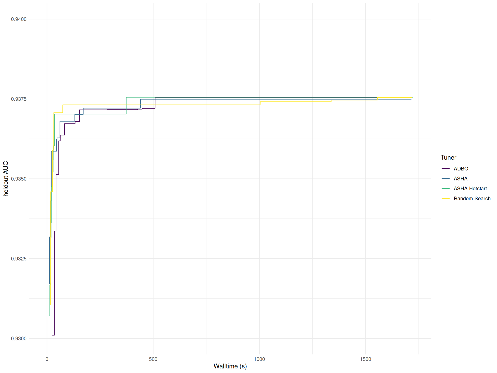
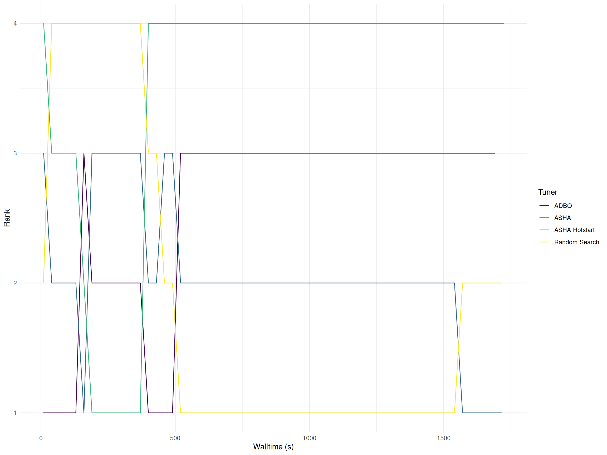
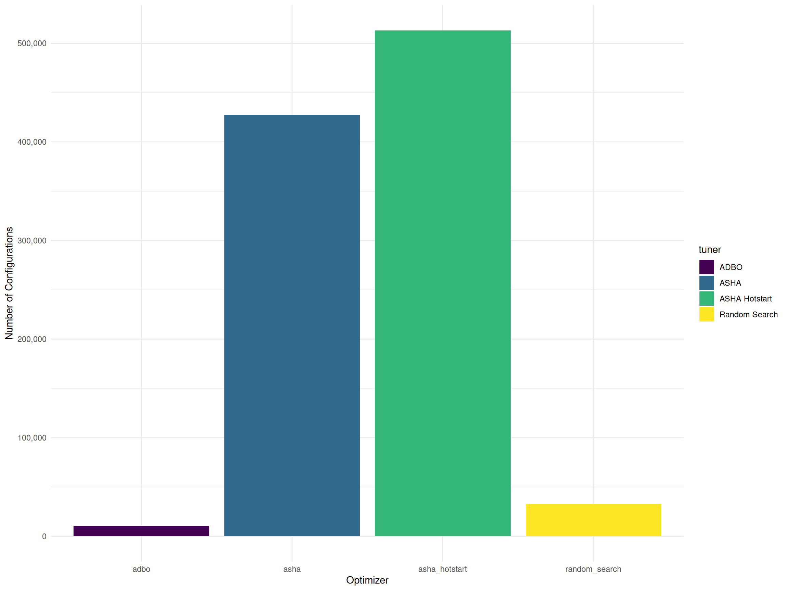
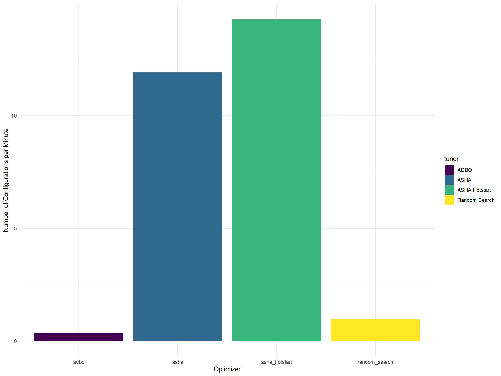
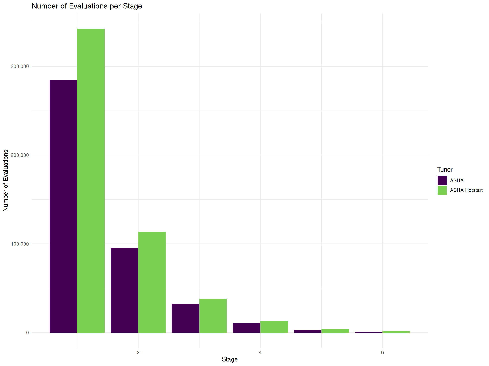
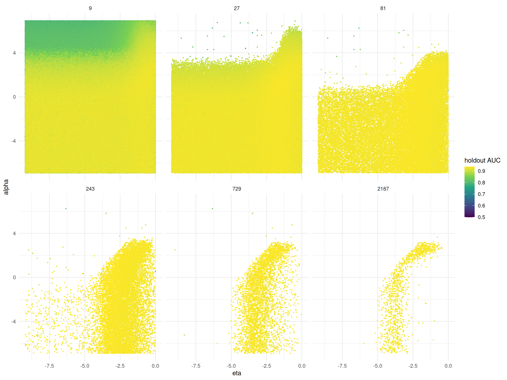

library(rush)
library(mlr3tuning)
library(mlr3learners)
library(mlr3oml)
library(mlr3pipelines)
library(mlr3hyperband)
set.seed(4356)
config = redux::redis_config(
host = "10.14.20.237",
port = "6362"
)
rush_plan(n_workers = 1280, config = config, worker_type = "script")
learner = as_learner(po("encodeimpact") %>>% lrn("classif.xgboost",
eta = to_tune(1e-4, 1, logscale = TRUE),
max_depth = to_tune(1, 20),
colsample_bytree = to_tune(1e-1, 1),
colsample_bylevel = to_tune(1e-1, 1),
lambda = to_tune(1e-3, 1e3, logscale = TRUE),
alpha = to_tune(1e-3, 1e3, logscale = TRUE),
subsample = to_tune(1e-1, 1),
nrounds = to_tune(p_int(9, 2187, tags = "budget")),
predict_type = "prob",
id = "xgboost"))
# download task
otask = otsk(359982)
task = as_task(otask)
# split task into training-test and holdout set
splits = partition(task, ratio = 0.8)
task_holdout = task$clone()
task_holdout$filter(splits$test)
task$filter(splits$train)
# create tuning instance
instance = ti_async(
task = task,
learner = learner,
resampling = rsmp("cv", folds = 3),
measures = msr("classif.auc"),
terminator = trm("run_time", secs = 1800L),
store_benchmark_result = FALSE,
store_models = FALSE,
callbacks = clbk("mlr3tuning.holdout", task = task_holdout)
)
# selected tuner
tuner = tnr("async_successive_halving", eta = 3)
# optimize
tuner$optimize(instance)Scope
This report evaluates the performance of asynchronous optimization algorithms on high-performance clusters. It aims to help users assess whether their workflow runtimes fall within expected ranges. If significant utilization anomalies arise, users are encouraged to report them via a GitHub issue.
The study optimizes eight hyperparameters of the XGBoost learner using the Bank Marketing dataset. This dataset, derived from a Portuguese bank’s marketing campaign, includes client demographics, financial details, and previous interactions to predict term deposit subscriptions. To ensure a fair comparison, 20% of the data was reserved for a holdout set, while the remaining data underwent 3-fold cross-validation during optimization. Performance was measured using the area under the receiver operating characteristic curve (AUC).
This report primarily focuses on computing resource utilization rather than algorithmic performance. A rigorous comparison of algorithm performance would require additional datasets and nested resampling. Experiments were conducted on 10 nodes, each with 128 cores, totaling 1,280 workers. The optimization ran for 30 minutes, consuming 640 CPU hours.
Optimization Algorithms
We compare four asynchronous optimization algorithms. As a baseline, we implement parallel random search (Bergstra and Bengio 2012) across all workers. Random search samples hyperparameter configurations uniformly at random from the search space. This is already an improved random search since the optimal number of boosting rounds is determined by early stopping on the test set.
Asynchronous Distributed Bayesian Optimization (ADBO) (Egele et al. 2023) runs sequential Bayesian optimization on multiple workers in parallel. Each worker maintains its own surrogate model (a random forest) and selects the next hyperparameter configuration by maximizing the upper confidence bounds acquisition function. To promote a varying exploration-exploitation tradeoff between the workers, the acquisition functions are initialized with different lambda values ranging from 0.1 to 10. When a worker completes an evaluation, it asynchronously sends the result to its peers via a Redis data base; each worker then updates its local model with this shared information. This decentralized design enables workers to proceed independently; eliminating the need for a central coordinator that could become a bottleneck in large-scale optimization scenarios. The number of boosting rounds is also optimized using early stopping on the test set. To start the optimization process with a diverse set of configurations, a Sobol sample with 2,000 configurations is generated.
The Asynchronous Successive Halving Algorithm (ASHA) (Li et al. 2020) belongs to the family of hyperband algorithms. The algorithm is an extension of the successive halving algorithm, which initially allocates minimal resources to many configurations and then progressively increases resource allocation only for those configurations that perform well. One of the key innovations of ASHA is its asynchronous approach to promotions. Unlike traditional methods that require all configurations in a given stage to complete before moving on, ASHA promotes promising configurations as soon as they meet the performance criteria. This strategy eliminates the bottleneck caused by slower or under-performing models, ensuring that the overall process remains efficient and that computing resources are used effectively. In our setup, ASHA begins with 9 boosting rounds in the first stage and increases the number of rounds by a factor of 3 per stage, up to a maximum of 2,187 rounds. The hotstart variant of ASHA further improves efficiency by continuing training from the previous stage instead of restarting from scratch
The following code presents a simplified version of the benchmark experiment, omitting cluster-specific implementation details.
Results
A key motivation for developing asynchronous algorithms in mlr3tuning was to address the low CPU utilization observed in batch parallelization. In the batch setting, when learners were trained rapidly, significant overhead was incurred from repeatedly starting new workers. When learner runtimes varied widely, considerable synchronization overhead arose due to waiting for all processes to complete. The asynchronous algorithms resolve these issues by enabling workers to operate independently. Table 1 displays the mean utilization of the workers, calculated as the ratio of learner runtime to total worker runtime. Across all algorithms, an overhead of approximately 7% is observed. This overhead accounts for the communication time required between workers and the cost of running resample().
| Tuner | Mean Utilization | Total Configurations | Mean Configurations per Minute |
|---|---|---|---|
| asha_hotstart | 92.8% | 513,188 | 14.3 |
| asha | 95.7% | 427,457 | 11.9 |
| random_search | 92.7% | 32,778 | 1.0 |
| adbo | 93.5% | 10,909 | 0.4 |
Figure 1 illustrates the performance of the algorithms over time, measured using the holdout AUC and the rank of the incumbent configuration. The performance differences between the algorithms are minimal, as all approaches quickly converge to well-performing configurations.


The following table presents the final hyperparameter configurations selected by each optimization algorithm along with their corresponding holdout AUC. Notably, random search selected a configuration with a higher number of boosting rounds compared to the other algorithms. This results in a much longer training time of the final model selected by random search.
| Tuner | holdout AUC | Runtime Learners (s) | alpha | colsample_bylevel | colsample_bytree | eta | lambda | max_depth | subsample | nrounds |
|---|---|---|---|---|---|---|---|---|---|---|
| asha_hotstart | 0.9376 | 16.09 | 0.38 | 0.66 | 0.51 | −3.58 | −1.72 | 14 | 0.86 | 243 |
| asha | 0.9375 | 24.79 | 0.30 | 0.46 | 0.50 | −3.31 | −2.06 | 16 | 0.98 | 243 |
| random_search | 0.9375 | 199.04 | 0.56 | 0.49 | 0.58 | −5.76 | −1.30 | 11 | 1.00 | 2533 |
| adbo | 0.9375 | 21.56 | 1.16 | 0.81 | 0.47 | −2.94 | −2.13 | 8 | 0.99 | 216 |
The ASHA algorithms evaluated 12 to 15 times more configurations than Random Search, primarily due to their use of low-fidelity evaluations in the early stages (Figure 2). By initially allocating minimal resources to a large number of configurations and progressively increasing allocation for promising candidates, ASHA was able to explore the search space more efficiently than Random Search.

The total number of evaluated configurations may not be a completely fair comparison, as the time required to initialize all workers varies between experiments. To account for these differences, Figure 3 presents the average number of configurations evaluated per minute, providing a more accurate measure of each algorithm’s efficiency by normalizing for worker runtime disparities.

Hyperband
Figure 4 illustrates the number of hyperparameter configurations evaluated per stage for ASHA and ASHA Hotstart. As expected, the number of configurations decreases by a factor of 3 at each stage, following the successive halving principle. With hotstarting, more configurations are evaluated in all stages. This increase is due to the reduced training time, as models continue training from previous stages rather than restarting from scratch. As a result, ASHA Hotstart improves resource efficiency, enabling a greater number of configurations to be explored within the same computational budget.

Table 2 presents the mean runtime of the learners at each stage of the ASHA algorithms. As expected, the runtime increases with the number of boosting rounds, since later stages allocate more computational resources to promising configurations. However, in the hotstarting variant, the runtime is lower in the later stages. This is because models continue training from previous stages rather than starting from scratch.
| Tuner | Stage | Mean Runtime (s) | Number of Configurations | Number of Boosting Rounds |
|---|---|---|---|---|
| asha | 1 | 2 | 285,031 | 9 |
| asha | 2 | 4 | 95,114 | 27 |
| asha | 3 | 11 | 32,099 | 81 |
| asha | 4 | 27 | 10,790 | 243 |
| asha | 5 | 75 | 3,464 | 729 |
| asha | 6 | 192 | 959 | 2187 |
| asha_hotstart | 1 | 2 | 342,489 | 9 |
| asha_hotstart | 2 | 3 | 113,986 | 27 |
| asha_hotstart | 3 | 8 | 38,315 | 81 |
| asha_hotstart | 4 | 19 | 12,950 | 243 |
| asha_hotstart | 5 | 53 | 4,211 | 729 |
| asha_hotstart | 6 | 135 | 1,237 | 2187 |
As an example, Figure 5 presents the marginal plot of the learning rate (eta) and the regularization parameter (alpha) from the ASHA Hotstart run. The plot visualizes the configurations evaluated by the algorithm at each stage, where each point represents a configuration and the color indicates the corresponding holdout AUC value. In the first stage, a large number of configurations are tested quickly with a small training budget. The plot reveals that high alpha values lead to lower AUC scores and are therefore not promoted to the next stage. As the algorithm progresses, it shifts focus toward the more promising regions of the hyperparameter space. By the final stages, fewer configurations remain, but they benefit from a greater number of boosting rounds. The algorithm tends to favor configurations with moderate eta values, suggesting that extreme learning rates are less effective in this scenario.

eta and alpha for ASHA Hotstart. Each point represents a configuration evaluated by ASHA Hotstart. The color shows the holdout AUC value. The facets show the number of boosting rounds or stages.
ADBO
In addition to measuring the runtime of the learners, we also tracked the runtime of the surrogate model training and the runtime of the acquisition optimizer (Table 3). The following table presents the proportional share of each component—learner training, surrogate model training, and acquisition optimization—relative to the total worker runtime. This breakdown provides insights into how computational resources are distributed among different aspects of the optimization process. Understanding these contributions helps in identifying potential bottlenecks and optimizing the balance between model evaluation and search efficiency.
| Mean Utilization Runtime Learners | Mean Utilization Runtime Acquisition Optimizer | Mean Utilization Surrogate | Mean Utilization |
|---|---|---|---|
| 94.3% | 2.8% | 0.7% | 97.9% |
References
Bergstra, James, and Yoshua Bengio. 2012. “Random Search for Hyper-Parameter Optimization.” Journal of Machine Learning Research 13 (10): 281–305. http://jmlr.org/papers/v13/bergstra12a.html.
Egele, Romain, Isabelle Guyon, Venkatram Vishwanath, and Prasanna Balaprakash. 2023. “Asynchronous Decentralized Bayesian Optimization for Large Scale Hyperparameter Optimization.” https://arxiv.org/abs/2207.00479.
Li, Liam, Kevin Jamieson, Afshin Rostamizadeh, Ekaterina Gonina, Moritz Hardt, Benjamin Recht, and Ameet Talwalkar. 2020. “A System for Massively Parallel Hyperparameter Tuning.” https://arxiv.org/abs/1810.05934.